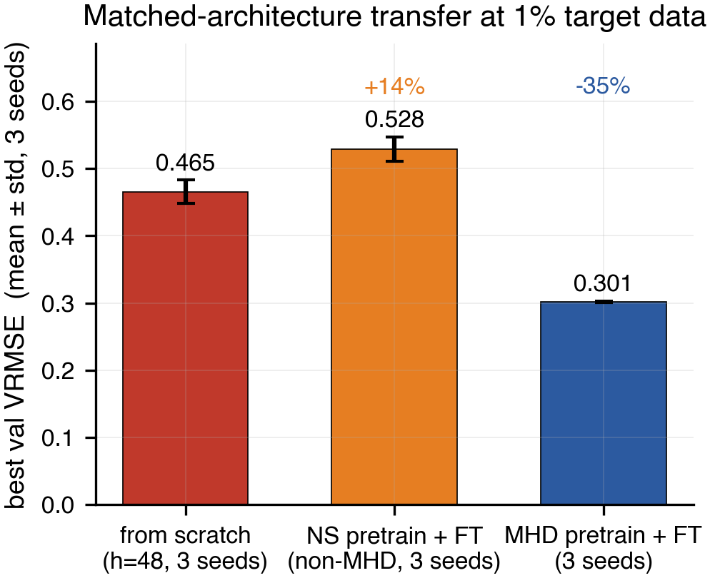
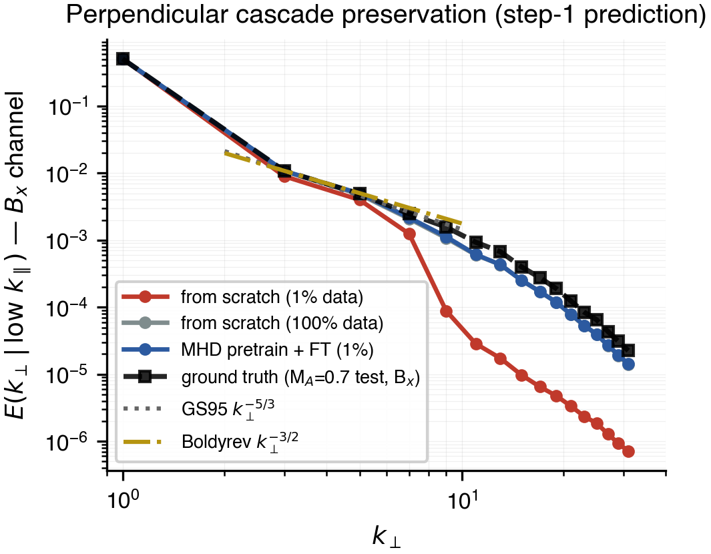
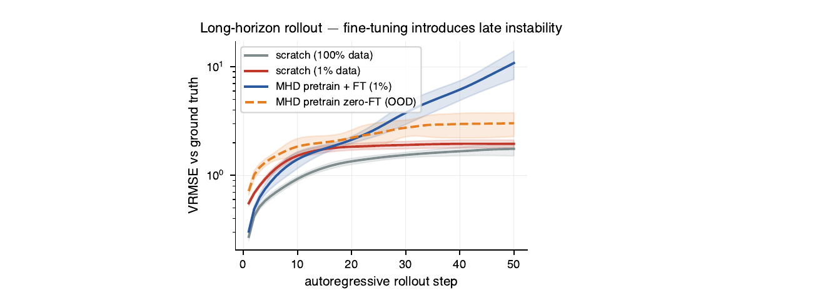

Last month I shipped a small workshop paper on neural surrogates for magnetohydrodynamic (MHD) turbulence. It is a controlled study: when you pretrain a Fourier Neural Operator on one MHD regime and fine-tune on another with only 1% target data, what actually transfers? Total human time was about 15 hours over a weekend; total cloud spend was under $20. Claude Code was in the loop the whole way.
The headline answer is a clean pair. In-domain MHD pretraining cuts validation error by 35% versus a from-scratch baseline at matched architecture. Pretraining on the wrong domain — supernova hydrodynamics with the same architecture — hurts by 14%. Source corpus matters; pretraining is not free regularization.

The more interesting answer is what fine-tuning breaks. Pretraining transfers spatial statistics: the perpendicular turbulent cascade of the magnetic field at one-step prediction tracks ground truth across roughly 1.5 decades of wavenumber. The from-scratch 1%-data baseline loses high-k power by nearly two orders of magnitude beyond k⊥ ≈ 8. The pretrained-then-fine-tuned model holds.

But fine-tuning introduces a new long-horizon instability. By autoregressive step 50, the fine-tuned model's error blows up to roughly 5× worse than the from-scratch baseline, even though it is better at step 1. The same pretrained checkpoint rolled directly on the target with no fine-tuning at all fails differently: instead of inflating, the imposed background magnetic field collapses toward zero.

The two pretraining-lineage models fail in opposite directions on the guide field. Ground-truth ⟨Bx⟩ sits at 1.0 throughout the rollout. With no fine-tuning, the pretrained checkpoint pushes it to 0.04 by step 50 (collapse). With fine-tuning, it inflates to 3.68 (over-saturation). Same pretraining initialization, opposite breakages, neither one stable.
Fine-tuning does not add instability to a stable baseline. It swaps one failure mode for another, and rewrites which axis breaks.
That is the lede if you came for the science. One-step accuracy is not a long-horizon stability metric. For plasma applications where you actually want to roll out tens of thousands of steps — tokamak transport emulation, astrophysical MHD surveys — this is the part that matters. Closing it plausibly takes either architectural constraints (divergence-free B parametrization, conservation-aware updates) or training-recipe changes (pushforward, iterative refinement). We tested none of those. The paper is honest about this; the takeaway is "here is a controlled diagnostic of where the easy recipe breaks," not "here is how to fix it."
The rest of this post is about how it actually got built.
How it got built
Two repos, two machines, one human, one Claude.
The infrastructure split was straightforward. My MacBook ran all the analysis — paper drafting, figure generation from saved checkpoints, LaTeX builds via tectonic (one binary, fetches packages on demand, builds the paper in about 8 seconds, removes a whole class of "the PDF won't compile" failure modes). All training ran on a vast.ai 4090 over SSH.
The vast.ai loop was the part that felt most like "automatic science" in the strict sense. Claude wrote a seed_runner.sh that chained three pretraining seeds into three fine-tuning runs and monitored them via SSH-piped tail -F. Overnight, three things went wrong unattended: a dead nohup, a download path that nested itself two levels deep, and a controlling shell that died after the first pretrain finished. Claude noticed each stalled poller, diagnosed it from logs, and wrote a v2 runner that detached properly with setsid nohup … < /dev/null &. None of those failures were anticipated. They were debugged and fixed without me being awake.
The paper itself went through five passes:
- First draft. A coherent narrative on the page with whatever numbers were on disk. Lots of placeholder figures.
- Honesty pass. Strip overclaims. Biggest cut: a section titled "long-horizon stability is architectural" got retitled, because we ran zero architecture ablations.
- Senior-audit pass. Three parallel agents running independently, each with about 30k tokens of file-reading budget. One audited figure-vs-claim consistency; one audited the logical thread of each section; one verified every number. They returned punch-list reports. They found four critical inconsistencies a careful reviewer would have caught:
- Figure 2 was plotting the wrong scratch baseline (h=64 instead of the matched h=48).
- Figure 4 was sourcing rollouts from a different dataset than the abstract claimed.
- Figure 5 reference lines were hardcoded theoretical, but the text claimed empirical.
- One discussion heading overclaimed beyond the evidence.
- Reviewer-fix pass. An external critique flagged a real factual error about the dataset's timestep structure. Removed from six locations.
- Conclusion pass. Restructured into three explicit buckets: "What the data supports / What our results do not establish / Scope-appropriate takeaway."
Single highest-leverage move across the whole project: running the three audit agents in parallel. I would not have caught the Figure 2 baseline mistake in any reasonable amount of time, and it would have been the first thing a careful reviewer flagged.
What was automatic, what wasn't
The parts of the loop that are automatic now — and weren't, in practice, six months ago:
- Running training jobs unattended and recovering from infrastructure failures.
- Sweeping seeds and propagating numbers through six places in a paper after one number changes.
- Generating figures from saved results; regenerating bibliography keys.
- Catching figure-vs-text inconsistencies via multi-agent audit.
- Building the LaTeX without a full TeX install.
The parts that aren't — and that mattered most for this paper:
- Choosing which question to ask. The MA=2.0 → MA=0.7 transfer was a guess that paid off. Nobody told the model to study it.
- Knowing when a result is too clean to trust. Three pretraining seeds collapsing to within σ=0.001 needed a human to ask, "are these actually different initializations?" and verify epoch-0 divergence.
- Knowing when to stop. The paper went through five passes. Pass six would have been net-negative. The model would have done pass six.
- Reading the field's taste. What workshop reviewers will and won't accept as a "diagnostic study" versus a "claim" is a social judgment.
A useful test for anyone working this way: when the question is "should we run a pushforward fine-tuning ablation? About 3 hours, about $1.50 on a 4090," the model will happily kick it off if you say yes. It does not surface the cost-benefit tradeoff unprompted. Whether that is the right behavior is a real question; for now I prefer it that way. Spending decisions still need a human.
The honest framing: the gradient of automatic science is steeper than I expected six months ago. A grad student running this exact study without Claude in the loop would, I think, produce roughly the same paper, but spend three or four times as long doing it — and would have shipped it with at least one of the four critical inconsistencies still in the figures. The most underrated tool in the loop was multi-agent audit, not code generation.
The boring numbers
- Total wall-clock human time: about 15 hours over a weekend.
- Total cloud spend: under $20 (vast.ai 4090, ~$0.40/hr).
- Total compute: ~30 GPU-hours pretrain + ~10 GPU-hours fine-tune.
- Final paper: 10 pages, 7 figures, 1 table, 19 citations, 0 LaTeX errors.
The paper makes a small, defended claim. It is the right size for the evidence. That, in the end, is the only thing that mattered.